| 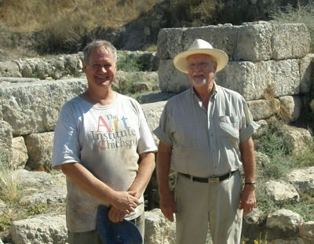 | |
| 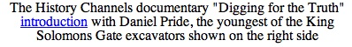 | 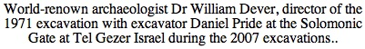 |
Until the summer of 1971 archaeology had failed to conclusively prove the historical basis of the Bible. The walls of Jericho had fallen from grace, the dream of Biblical Archaeologist William Foxwell Albright was still just a theory. That summer Yigael Yadin would complete the first proof of a Biblical Passage by finding the city gate of Gezer which King Solomon built circa 960 BC, and the Bible described in 1 Kings 9:15
"Now this is the way King Solomon conscripted the Labor Corps to build the house of the Lord, his house, the Millo, the wall of Jerusalem, Hazor, Megiddo, and Gezer"
The Holy Bible 1 Kings 9:15
The Solomonic Gate at Gezer was the third Solomonic Gate discovered. Combined with the discoveries of the Solomonic Gates at Megiddo in the 1930's and Hazor in the 1950's, the discovery of the city gate of Gezer completed the first proof of a biblical passage in history with rocks on the ground. It was the long sought after historical nexus where scientific theory finally validated Biblical History.
|
Archaeologist Israel
Finkelstein |
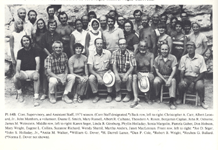 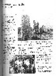
Life after the excavation changed immediately and dramatically for the
youngest of the excavators of King Solomon's Gate,... the irreverent
"party animal" teenager who knew nothing of the Bible, and everything
about having a good time. It became pervaded by a long series of
phenomenal circumstances and coincidences that spanned decades.
It is a long list of independently documented events.
Events who's intertwining coincidental phenomena defy probability, and
challenge belief. The sum total reflects the text that provides its
milieu in detail, from an event steeped in revelations drama at the
Election of Pope Benedict, to an encounter with John Paul's almost
assassin disguised as a Money Changer in the courtyard of the church
of Justinian. It ranges from incidents during a real life genocide of
an entire people (Cambodia) to a pivotal role during the exodus of
their flight. Even the slaughter of the innocents makes an appearance,
and as if to make the point fine, does so on Christmas Day. The one
point I really could have missed was the murder of my good friend
The events are described and documented herein.
| 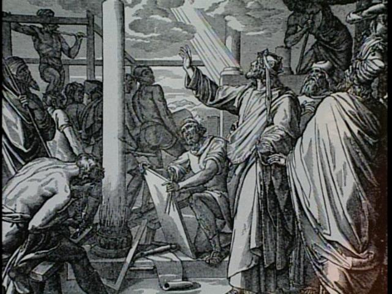 | 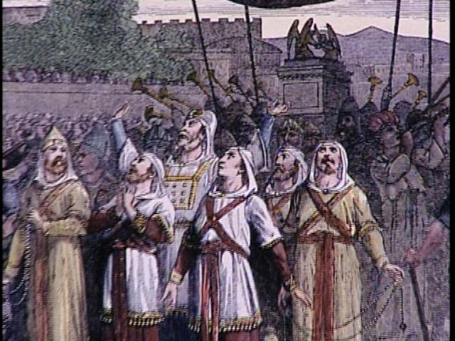 | 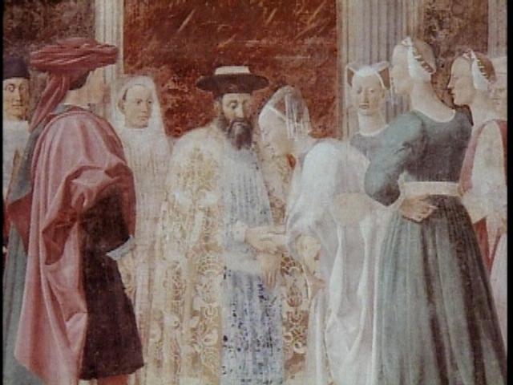 |
The Aftermath: Stories from a Lifetime
Best Read in Top-down order
The Money Changer of Ayasofya
Habemus
Papam
Am I my Brothers Keeper
Herod's Slaughter of the Innocent at
Christmas
The Valley
of the Shadow of Death
Reading
the First Book of Kings
Samson
Dr Hellerstedt and the Killing Fields
The Exodus of the Hmong
Nathan R note
Nathan R Note Announced
Nathan the Prophet
Beheading of the Baptist
What's in a Name ?
Christ
and the Twelve Apostles
The
Burning Bush
The Road to
Damascus
Solomon's Women
Elliot's Solution
The Call
The Two
Noahs
Michael's Supertanker
The Roar of the Beast
The Face of God
Camping Lionetta
Solomonic Artifacts
The Party
The
Chi-Rho and the Thumbs up
The NYPD
and the Firestick
Manifesto Night
Don and the Bikers
The Rose
Cain
Originating Event
The Strangeness of it All
Heaven's Silence
A Plea
| 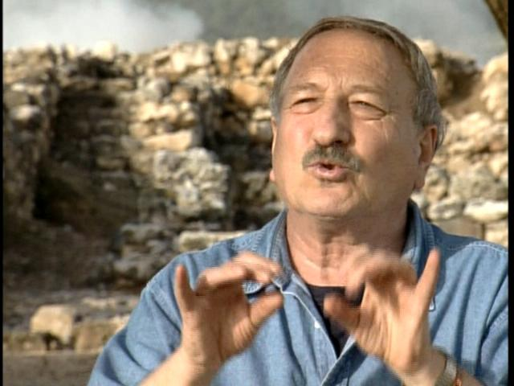 | 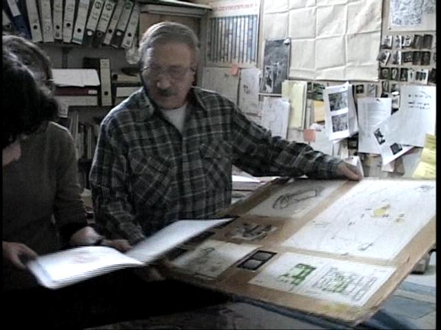 | 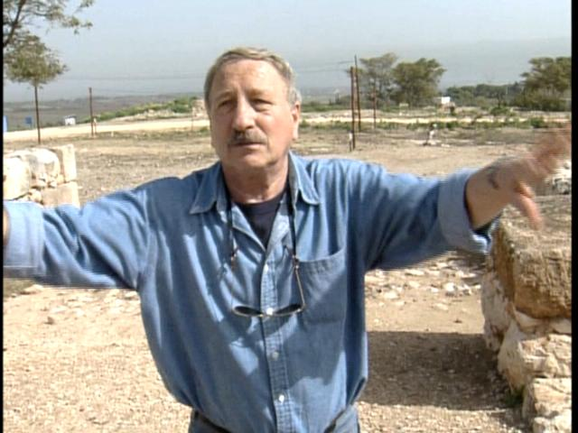 |
Photos taken during Hazor 2003 Excavations of Pride with archaeologist Dr. Amnon Ben-Tor (featured in "Digging for the Truth") at the Solomonic Gate at Hazor. Amnon was a student under Yigael Yadin and was periodically present during the Solomonic Gate excavation at Tel Gezer in 1971,... and at many of the late night parties that summer on the Tel. He now runs excavations at the Biblical site... Hazor, and is the current Yigael Yadin professor at Hebrew University in Jerusalem.
Amihai Mazar ends the debate with Carbon 14 at Tel Rehov
Solomonic means justice, Wiesenthal means persistance in the pursuit
of Justice
In honor of his Memory
and
(never again) in support of the Cambodian Wiesenthal's of Today
Webmaster Email Address: Webmaster@KingSolomonsGate.com
Footnote - Additional Events yet to be written down: John Moulton's Akron Adventure, R Bud Dwyer's Allegheny Reporter, Solomon's Lamp, Damocles and Diane at Kalaelock, Dresher on a Pinball Machine, Joans Ankle, Spirit in the Sunroof, Crows of the Eve, Treadmill Company, Taj Mahal Snapshot, Natural Born loose in Bangkok, Rings in the Rafters, Mishawaka Tattooed Knuckles, The Naked Truth, The Grave of Tel Gezer, Squeezing with Rob and TL, Two Lights Dancing on the reflecting pool, Singles Weekend at the Holocaust Survivors reunion, Daddy Warbucks, Carrying the Chair, Biblical Passages replay, Crow commentary, The Day Johnny Cash Died, Spring 1954(?) UN Gen Assembly "walk-on debut" trailing rope and harness. Also, It increasingly appears that there is an entire second tier of signs and marks just beyond my view that happen to many people on the periphery of these events which I periodically hear about but have no way of documenting at present.
Site Keys: King Solomon, JonBenet Ramsey, Tel Gezer, Gezer, Proof of the Bible, Biblical Proof, History of Bible, Bible, Archaeology, Hebrew Union, William Dever, Biblical, Bible, Old Testament, Tel Hazor, Tel Megiddo, Tel Gezer, Avraham Biran, Bible, Old Testament, 1 Kings 1:8, King Solomon, Nelson Glueck School, Amnon Ben-Tor, William Albright, William G Dever, scientific proof of biblical truth, Bill Dever, Dever, Yigael Yadin, Biblical, Proof of the Bible, King James Bible, Biblical Proof, Flanders Petri, Tel Hazor, Tel Megiddo, Tel Gezer, James K Hoffmeier, Trinity, Hazor, Megiddo, JonBenet Ramsey Avraham Biran, Tel Gezer, Archaeology, Nelson Glueck School, Proof of the Bible, Biblical Proof, History of Bible, King Solomon, Bible History, Amnon Ben-Tor, William Albright, William G Dever, Yigael Yadin, Solomonic, Biblical, Flanders Petri, James K Hoffmeier, Trinity International University, Hershel Shanks, Biblical Archaeology Review, King Solomon, King James Bible, Tel Gezer, Archaeology, Hazor, King Solomon, Allegheny, Megiddo, Tel Gezer, Allegheny College, Don Hobson, Avraham Biran, Hebrew Union College, Nelson Glueck School, Dickinson, Proof of the Bible, Biblical Proof, scientific proof Ben-Tor, Hebrew University, Jerusalem, William Foxwell Albright, Glueck School, Don Iskowitz, Solomonic, Solomonic Gate, King Solomon, Tel Gezer, Archaeology, Amnon Ben-Tor, Hebrew University, William Albright, William G Dever, Yigael Yadin, Solomonic Gate, King Solomon, Gate, City Gate, Solomon's Gate, Flanders Petri, James K Hoffmeier, Trinity International University, Digging for the Truth, Biblical, Nelson Glueck School, Amnon Ben-Tor, Hebrew University, William Albright, William G Dever, Yigael Yadin, Dickinson, University, Solmonic, Solomonic Gate, King Solomon, Gate, City Gate, of Arizona, King Solomon, Solomon's Gate, Hazor, Megiddo, Tel Gezer, Archaeology, Allegheny College, Donald Hobson, Flanders Petri, James K Hoffmeier, Trinity International University, Hazor, Hazor, Megiddo, Don Iskowitz, Gezer, Avraham Biran, Hebrew Union College, Tel Gezer.
Abel Harris Lorraine Rohlik Solomons Women JonBenet Ramsey Moses Burning Bush Kevin Ryan Dr John Hellerstedt MD Joshua John Wayne Gacy Jerusalem Lutheran Hostel Nathan the Prophet Donald Hobson Habemus Papam King Solomon Tel Gezer King Solomon Jerry Daniels Exodus Michael Jesselson Ayosofya Mehmet Ali Agca Nathan R Todd Dickinson Biblical Kings Pellatier Library Amnon Ben-Tor Eric Harris Dickinson Dylan Klebold William Foxwell Albright